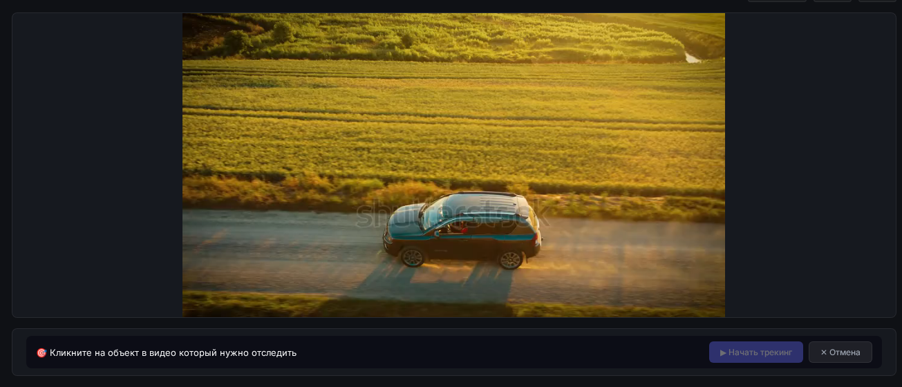

Собирайте видео, текст и фигуры на таймлайне, анимируйте свойства через кейфреймы, накладывайте маски и отслеживайте объекты прямо в браузере.

Всё необходимое для быстрого монтажа и экспериментов с видео
Добавляйте неограниченное количество дорожек и перетаскивайте клипы любого типа на любую дорожку.
Анимируйте позицию, масштаб и прозрачность. Все ключи редактируются прямо на таймлайне.
Используйте фигуры в качестве масок для видео: квадрат, круг, ромб, многоугольник.
Кликните на объект в видео — AiClips автоматически построит траекторию движения.
Добавляйте текстовые надписи и геометрические фигуры с настройкой цвета и размера.
Подключите внешних AI-агентов: они смогут читать таймлайн, добавлять клипы и запускать рендер.
Пример результата AI-трекинга объекта в видео
AiClips включает MCP-сервер, который позволяет AI-агентам управлять таймлайном. Подключите Claude Desktop и управляйте проектом голосом или текстом.
get_timeline — получить текущее состояниеadd_clip — добавить клипupdate_clip — изменить свойстваrender_video — запустить рендерgit clone https://github.com/Rom4ik-12/AiClips.git
cd AiClipscd backend
python -m venv venv
source venv/bin/activate
pip install -r requirements.txt
python main.pycd frontend
npm install
npm run dev